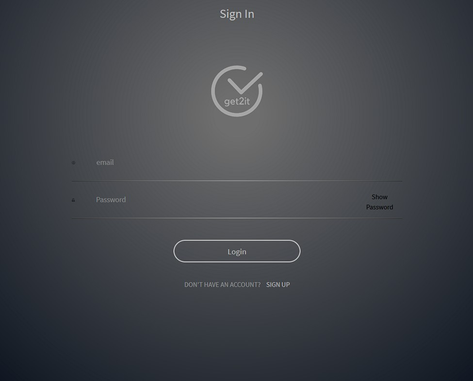

Deployed Project is Linked Below
Get2It
Our final team project, which lasted for several weeks. We had a team of six working on this task organizer that included a project manager and two IOS developers. The rest of us were web developers that were continuing a project that was started by another team. One of my partners worked on the front-end exclusively while the other worked on the back-end exclusively. Most of my work was also on the front-end but I also helped out on the back-end. As a team, we created a Notion document for our product board. Part of this work included creating release canvases. We created versions 1.1 - 1.3 and completed 1.1 and 1.2. I was assigned to work on:
- Show/hide password feature on registration and log in pages.
- Fixing of bugs such as task list rendering
- Adding categories to tasks
- Filter tasks by date
- Testing
On our Trello Board
(page 2), you can see that I also
did work on the introduction page and the footer.
To login, use the email address is bob1@gmail.com and the password is 1234test.
This project demonstrates:
;){kind=link}
;){kind=link}
- Working with a project team to realease an App.
- Adapting forms, post request, and put request to handle categories
- Modified backend to store categories and connect them to tasks
- Used filters to display tasks by date or by category
- Created Redux testing utility to handle front-end testing
- Wrote all front-end tests using Jest